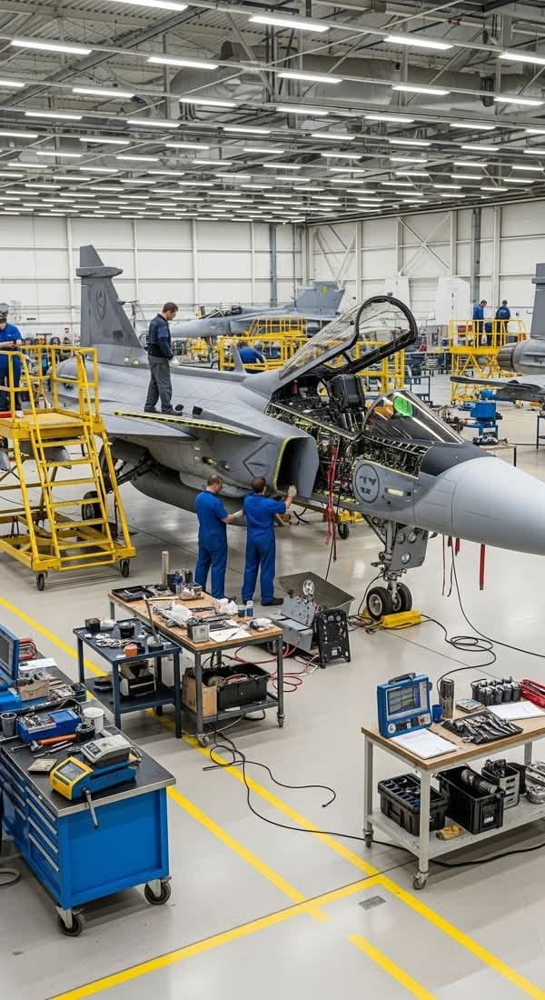

Un métier qui fait voler les avions
Le mécanicien aéronautique entretient et répare les avions. Son travail est important pour assurer la sécurité des pilotes dans les diferentes missions et exercices.
Le mécanicien aéronautique doit :

Ce métier demande beaucoup de sérieux, de rigueur et de précision et d'organisation. Il faut aussi aimer la mécanique, les avions et le travail en équipe.
Après la troisième, on peut choisir une formation dans l'aéronautique, par exemple un bac professionnel spécialisé dans la maintenance des avions. On peut aussi apres un bac generale specialité math et phisique-chimie. La base de rochefort est specialisée dans la formation des mecaniciens.
Après cette formation, il est possible de continuer ses études pour se spécialiser dans la mécanique sur les rafale d'une durée de 6 mois.
Ce métier permet de travailler sur des avions et de comprendre leur fonctionnement. Il est intéressant pour les personnes qui aiment la mécanique et le domaine de l'aviation.
vous pouvez consulter le site de l'Onisep pour en decouvrir d'avantage: Site de l'Onisep